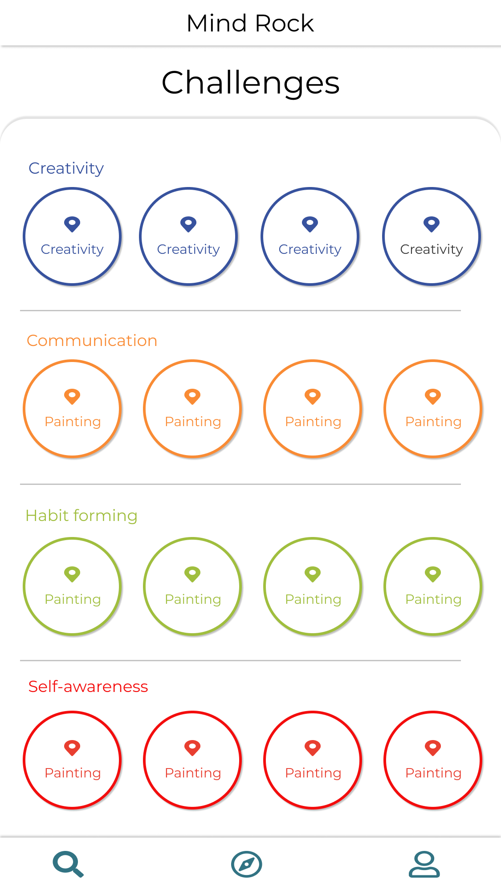
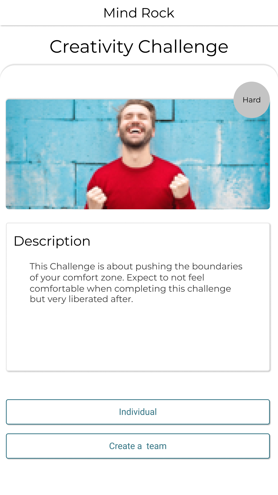
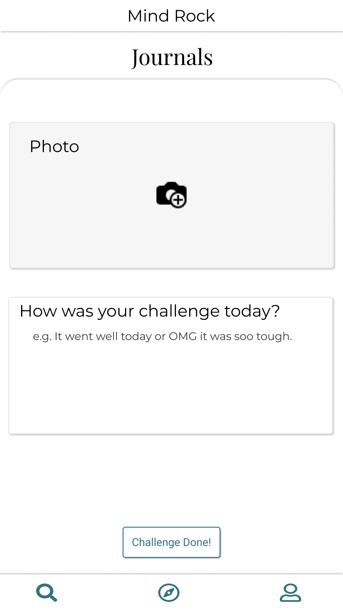
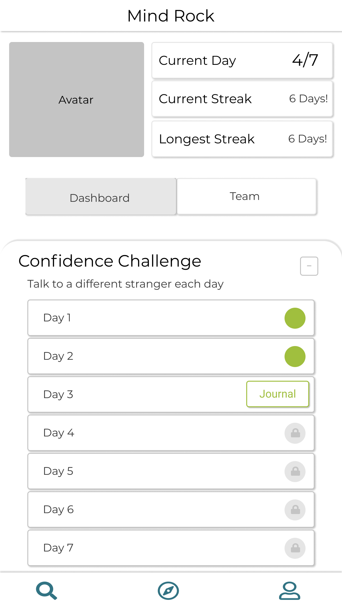
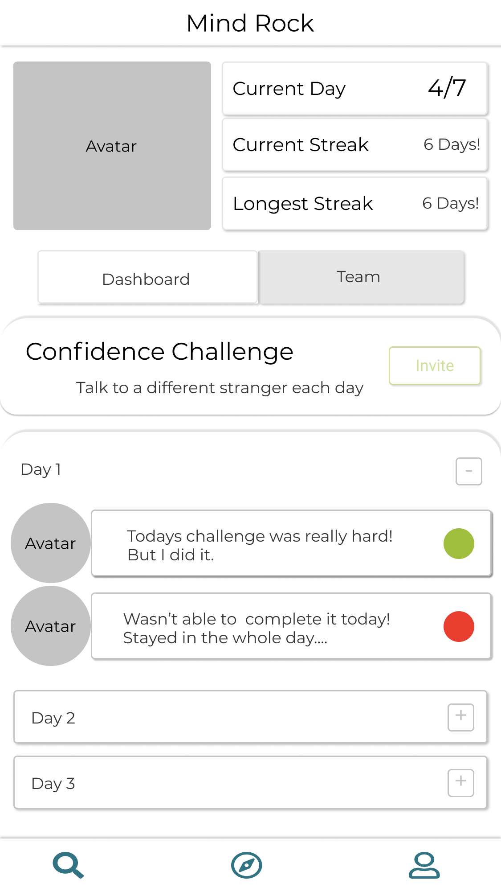

MindRock was the final project of Le Wagon’s Full-stack Coding Bootcamp. The time frame was 10 days in total.
In the ever growing and cut-throat job market that Chinese millennials face, confidence toward handling work place situations is their key to success, but many find it hard to define their brand of confidence. They understand it in theory but have trouble applying it, labeling themselves as introverted or ‘Zhai’.
The goal of this project was to use technology to give recent university graduates a tool to bridge the university to workplace skills gap.
Our team consisted of four people. My role was product owner and User Experience design. Benjamin was our lead developer, Avery our backend developer and Claire was the frontend developer.
We spent the first day talking to a range of adults between the age of 23 and 28. The target users were all Chinese millennials.
About half were university students and the other half are actively seeking employment or currently in their first position after graduating university.
Our core research question was “How do you feel about the transition from being a student to a full-time employee?”
From this we learnt a few things:
- Recent graduates feel like they don’t understand workplace norms.
- The standard for professionally communicating and teamwork are poorly understood.
- Some felt like they were stagnant or in a rut in terms of learning.





In our solution we decided to tackle points two and three—Attempting to provide a solution that increases teamwork and breaks individuals out of their rut.
You can interact with the actual mini-program here (You’ll need WeChat).
Alternatively, this video walks through the Mini-Program.
MindRock gives users the option to complete a challenge in a team, and to share completed challenges with a friend, however, we realized from user testing that the hook to retain users is not sticky enough.
“I’ve got nothing to lose” said one user.
A possible solution could be negative contracts—for example, pledging a dollar amount at the beginning of a challenge and only receiving it back if they complete all the challenges—or a clearly defined goals system to incentivize the user to see a 7-day challenge through.
END